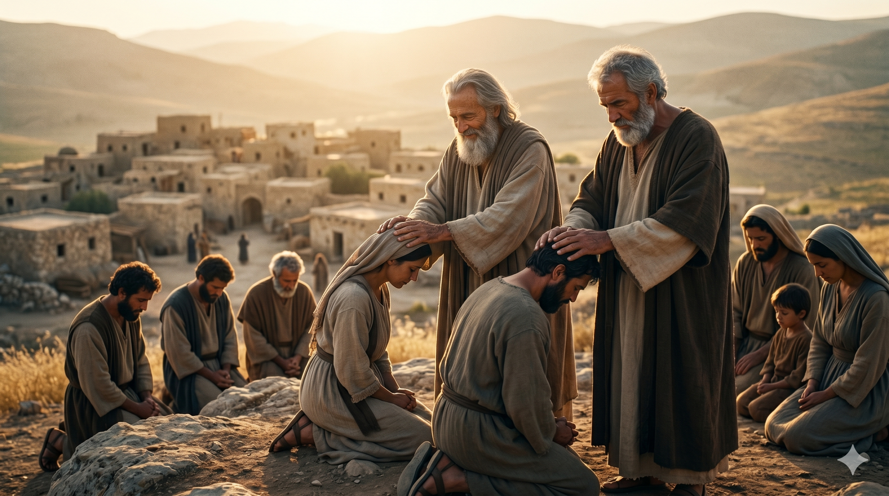

사마리아 마을 어귀, 거절당해 한 분 앞에서 불을 청하는 두 형제와 조용히 돌이키시는 한 분.
예수께서 승천하실 기약이 차가매 예루살렘을 향하여 올라가기로 굳게 결심하시고 사자들을 앞서 보내시매 그들이 가서 예수를 위하여 준비하려고 사마리아인의 한 마을에 들어갔더니 예수께서 예루살렘을 향하여 가시기 때문에 그들이 받아들이지 아니하는지라. 제자 야고보와 요한이 이를 보고 이르되 주여 우리가 불을 명하여 하늘로부터 내려 그들을 멸하라 하기를 원하시나이까. 예수께서 돌아보시며 꾸짖으시고 함께 다른 마을로 가시니라. — 누가복음 9:51–56
예수께서 "승천하실 기약이 차가매" 예루살렘을 향해 결심하고 올라가시는 길입니다. 십자가가 멀지 않은 길, 한 분의 얼굴에는 깊은 결단이 새겨져 있었습니다. 사자들을 앞서 보내 사마리아 한 마을에서 묵으려 했으나, 그 마을은 예수께서 "예루살렘을 향하여 가시기 때문에" 받지 않았습니다. 사마리아인들은 예루살렘 성전이 아니라 그리심 산을 거룩한 자리로 여겼고, 예루살렘으로 향하는 유대인 행렬을 환영하지 않는 오랜 적대감이 있었습니다. 한 분과 그 일행은 길에서 거절당했습니다.
그때 두 형제 야고보와 요한이 한 분에게 묻습니다. "주여 우리가 불을 명하여 하늘로부터 내려 그들을 멸하라 하기를 원하시나이까." 그들의 머릿속에는 갈멜산에서 하늘 불을 내린 엘리야의 한 장면이 있었을 것입니다(왕하 1장). 거룩한 의분처럼 들리는 이 말은, 사실 "보아너게 — 우레의 아들"이라는 별명이 왜 그들에게 붙었는지를 잘 보여줍니다. 한 분에게 모욕을 가한 자들에 대한 분노, 자기들이 모시는 한 분의 영광이 손상되는 것을 견디지 못하는 뜨거움. 그러나 한 분은 "돌아보시며 꾸짖으시고 함께 다른 마을로 가시니라"고만 기록되어 있습니다. 어떤 사본에는 "너희는 무슨 정신으로 말하는지 모르는도다 인자는 사람의 생명을 멸하러 온 것이 아니요 구원하러 왔노라"는 한 마디가 더 붙어 있습니다. 거절당한 사마리아의 한 마을에 한 분이 들고 가신 것은 불이 아니라 다음 마을을 향한 한 발걸음이었습니다.

훗날 사마리아에 복음이 임할 때, 베드로와 함께 안수하러 내려간 늙은 사도 요한의 잔잔한 미소(행 8:14).
우리도 누군가에게 거절당할 때 마음에 "불"이 일어납니다. 한 분의 이름이 모욕당했다고 느낄 때, 교회가 무시당했다고 느낄 때, 우리가 옳다고 믿는 가치가 비웃음을 살 때 — 우리는 의분이라는 이름으로 정죄의 불을 명하기 쉽습니다. 그러나 한 분이 우리에게 던지시는 한 마디는 무겁습니다. "너희는 무슨 정신으로 말하는지 모르는도다." 우리의 분노가 정말 거룩한 분노인지, 아니면 자존심이 상한 우레의 소리인지, 한 분의 시선 앞에서 정직하게 점검해야 합니다.
놀라운 것은, 한 분이 그날 꾸짖으시고 "함께" 다른 마을로 가셨다는 사실입니다. 야고보와 요한을 떼어 놓지 않으시고, 그 거친 기질을 끝까지 데리고 가십니다. 훗날 사도행전 8장에서 사마리아에 복음이 임할 때, 예루살렘 교회는 베드로와 요한을 그리로 내려보냅니다(행 8:14). 한때 "불을 내리리이까" 묻던 그 청년이, 거절했던 그 사마리아 사람들 위에 안수하러 내려가는 한 사도가 되어 있는 것입니다. 한 분의 꾸짖음은 사람을 잘라내는 칼이 아니라, 일생을 다시 빚는 도공의 손이었습니다. 오늘 내 안의 우레도 한 분의 손에 맡기면 사랑의 잉크로 흐를 수 있습니다.
거절당한 자리에서 우리의 첫 충동은 '불'입니다. 그러나 한 분의 첫 발걸음은 '다음 마을'이었습니다.
당신 안의 우레를 잘라내려 하지 마십시오. 그것을 한 분의 손에 맡기면, 한 사도의 사랑의 잉크가 됩니다.